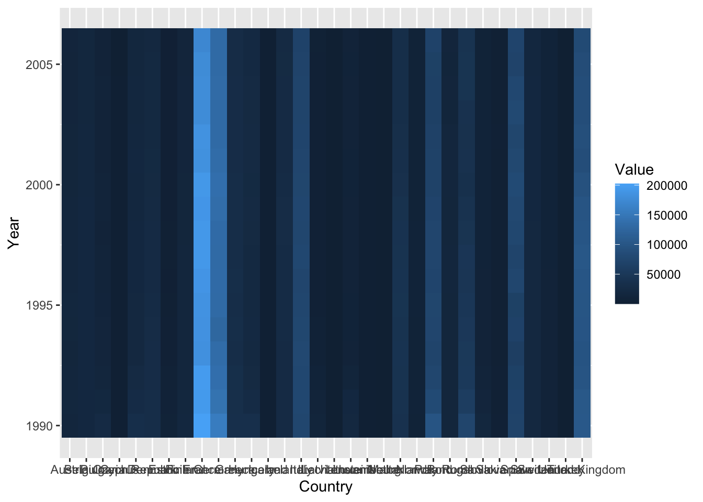

Arithmetic operators in R works as the normal mathematic operators and follow the order of operations/calculations.
20 * 4 + 1## [1] 81Just as in mathematics operations, parentheses () can be used to change the order of operations.
20 * (4 + 1)## [1] 100More arithmetic operators:
| Mathematics operators | R arithmetic operators | Descriptions |
|---|---|---|
| a + b | a + b | a plus b |
| a - b | a - b | a minus b |
| a \(\times\) b | a * b | a multiply b |
| a \(\div\) b | a / b | a divided by b |
| a \(\%\) b | a %% b | remainder of a divided by b |
| \(a ^ b\) | a ^ b | a raised to the bth power |
Way more than a calculator, R can not only operate on numerical values, but also on vectors, an important data type in R. Vectorization makes R very efficient in operating with high dimensional data.
You can define a vector as below:
c(1, 2, 3)## [1] 1 2 3Operate on vectors:
c(2, 4, 3)## [1] 2 4 3c(2, 4, 3) / 2## [1] 1.0 2.0 1.5c(2, 4, 3) + c(1, 2, 3)## [1] 3 6 6c(2, 4, 3) / 2 + c(1, 2, 3) * 3## [1] 4.0 8.0 10.5NOTE
Some frequently used R-objects are: “Vectors”, “Lists”, “Matrices”, “Arrays”, “Factors”, and “Dataframes”.
“Vectors” which we just worked with is probably the simplest and most fundamental object. Vectors can be of six classes: Logical (e.g., TRUE, FALSE), Numeric (e.g., 20.34, 100), Integer (e.g., 0L, 3L), Complex (e.g., 3+2i), Character (e.g., ‘Hello world’, ‘3.14’, ‘z’), and Raw (e.g., charToRaw("math")).
Later we will also go through dataframes in this workshop.
No matter which R object we are working with, sometimes it may not be easy to directly embed these data into a math operation or other functions as above (e.g., what if the data is a \(1000 \times 10000\) matrix). Instead we will assign and store the data / value to a so-called “variable”.
We can assign value to variable with assignment operator <-. Let’s assign c(2, 4, 3) to variable x:
x <- c(2, 4, 3)
x## [1] 2 4 3x / 2## [1] 1.0 2.0 1.5y <- x / 2
y## [1] 1.0 2.0 1.5Shortcut for assignment operator:
Alt + -Cmd + -c(15, 256, 11) to variable numnum is odd1. Functions
The base R has many useful built-in functions that maybe helpful to your data. The normal syntax of using a function is as such: function_name(argument 1, argument 2, ...)
print can be used to display informationy## [1] 1.0 2.0 1.5print(y)## [1] 1.0 2.0 1.5sort: Order a vector into ascending or descending order.# function name: sort; argument: y
sort(y)## [1] 1.0 1.5 2.0We just sorted a vector in ascending order, but how to do it in descending order? How to get all the arguments info of a function and learn how to use a function?
?function_name or search R help files with a word or phrase by ??regresion:?sort
# sort vector y in descending order
sort(y, decreasing = TRUE)## [1] 2.0 1.5 1.0??regresion2. Packages
There are many basic and useful functions in base R. Sometimes the functions you want to use may not be included in base R, but instead in a specific R package. That’s when we need to install the package.
dplyr is a R package that we will use for data manipulation later in this workshop.
# install the package
install.packages("dplyr")
# load and attach add-on packages
library(dplyr)NOTE
Most of the times, you can find help about the function/package that you are interested in from its documentation or online sources. But if your work needs some specific functions or the same chunk of code is reused multiple times, it’s always a good idea to write your own functions or even packages! See these resources of creating functions and your own R package.
ggplot2 is a package that makes graphics with user input data and commands. Install and load ggplot2.1. Accessing elements in a vector use [index] or [index_start : index_end]
z <- c(y, 200)
z## [1] 1.0 2.0 1.5 200.0# access the third element in z
z[3]## [1] 1.5# access the second to forth elements in z
z[2:4]## [1] 2.0 1.5 200.02. Import data to R
In practice, we may often work with a dataframe that looks like this:
| mpg | cyl | disp | hp | drat | wt | qsec | vs | am | gear | carb | |
|---|---|---|---|---|---|---|---|---|---|---|---|
| Mazda RX4 | 21.0 | 6 | 160 | 110 | 3.90 | 2.620 | 16.46 | 0 | 1 | 4 | 4 |
| Mazda RX4 Wag | 21.0 | 6 | 160 | 110 | 3.90 | 2.875 | 17.02 | 0 | 1 | 4 | 4 |
| Datsun 710 | 22.8 | 4 | 108 | 93 | 3.85 | 2.320 | 18.61 | 1 | 1 | 4 | 1 |
| Hornet 4 Drive | 21.4 | 6 | 258 | 110 | 3.08 | 3.215 | 19.44 | 1 | 0 | 3 | 1 |
| Hornet Sportabout | 18.7 | 8 | 360 | 175 | 3.15 | 3.440 | 17.02 | 0 | 0 | 3 | 2 |
Before talking about how to access values in such dataframes, let’s first see how we can import a dataset into R:
?read.table()
ghg <- read.table("/Users/liujia/Desktop/europ_agriculture_GHG.csv", header = TRUE, sep = ",")# open the dataset in R
View(ghg)This is a dataset of greenhouse emission from agricultural area of European countries during Year \(1990\)-\(2006\). The original dataset was downloaded from the European Union Open Data Portal. I simplified the data so that it fits our workshop better.
Let’s take a quick look at the data:
# return the first parts of the object which is dataframe "ghg" here
head(ghg)## Country_code Country Sector_code Sector Pollutant Year Value Units
## 1 AT Austria 4 Agriculture CH4 1990 230015.5 Mg
## 2 AT Austria 4 Agriculture CH4 1991 226798.0 Mg
## 3 AT Austria 4 Agriculture CH4 1992 218327.0 Mg
## 4 AT Austria 4 Agriculture CH4 1993 218808.7 Mg
## 5 AT Austria 4 Agriculture CH4 1994 219121.4 Mg
## 6 AT Austria 4 Agriculture CH4 1995 220144.6 Mg# return the last parts
tail(ghg)## Country_code Country Sector_code Sector Pollutant Year Value Units
## 2171 TR Turkey 4 Agriculture N2O 2001 424.0000 Mg
## 2172 TR Turkey 4 Agriculture N2O 2002 444.0000 Mg
## 2173 TR Turkey 4 Agriculture N2O 2003 438.0000 Mg
## 2174 TR Turkey 4 Agriculture N2O 2004 484.0000 Mg
## 2175 TR Turkey 4 Agriculture N2O 2005 510.2228 Mg
## 2176 TR Turkey 4 Agriculture N2O 2006 510.2228 Mg# return the number of rows
nrow(ghg)## [1] 2176# return the number of columns
ncol(ghg)## [1] 8# return the dimensions
dim(ghg)## [1] 2176 8Notice that the datasets you work with in practical may not be clean, for example, there maybe missing values. Here is a link that talks about how to deal with missing values in R. You may find more solutions or suggestions online.
3. Accessing elements in a dataframe
You can get a specific column of a dataframe by df_name$colume_name`:
ghg$CountryAccessing elements with df_name[r_index, c_index]
r_index/c_index can be row/column numbers or ranges. For example, get the element at row 3, column 6:ghg[3, 6]## [1] 1992If you want to get specific row(s), then specify the row number(s) and leave the column part empty, df_name[r_index, ]. For example, you can get the first three rows by:
# return the first 3 rows
ghg[1:3, ]If you just want to select specific column(s), then leave the row index empty, df_name[ , c_index]. Here you can get the last 5 columns by:
# return the last 5 columns
head(ghg[ , 4:8])c_index can be column names.ghg[ , c("Country", "Year")]r_index can be relational operatorWe can get the records that are after Year \(2000\):
ghg[ghg$Year > 2000, ]Or we may only be interested in “CO2” pollutant, so get the rows of only CO2 by:
ghg[ghg$Pollutant == "CO2", ]The symbol > and == we used above are so called “relational operator”. Normally a relational operator will return a logical type (TRUE / FALSE) based on the relationship between its leftside and rightside. Then the outer part of the code, if there’s any, will decide what to do based on the logical type.
Relational operator:
==: checks if the left side values equal to that of the right side. So in the example above, for each row, if its Pollutant value is “CO2”, the row will be filtered as one of the output.>: greater than<:less than<=: less than or equal to>=: greater than or equal to!=: unequal toWhat about if I am interested with the data of both CO2 and after Year 2000?
You can include both two conditions with & (AND):
ghg[ghg$Year > 2000 & ghg$Pollutant == "CO2", ]The | (OR) operator returns true if its leftside or rightside is true. For example, we can get all the rows of pollutant as “CO2” or “CH4” by:
ghg[ghg$Pollutant == "CO2" | ghg$Pollutant == "CH4", ]The & and | we just saw are two logical operators.
Logical operator:
!x: NOT xx | y: x OR yx & y: x AND yNOTE
R’s basic subsetting operators are powerful. It allows you to adopt different methods, such as relational and logical operators to extract the useful information. I am including some good online resources here about subsetting: Everything I know about R subsetting, and subsetting in the book Advanced R.
ghg dataframetidyverseIn the last Exercise, you applied one function sort to a dataframe. Sometimes, you may need to use multiple functions, say 10, to a dataframe before you get the final set that you like. Through this long process, you either store the output of each function to a variable and use it as an input of the next function, or use some function commands with data as the argument of the next function. Either way, it can be messy and easy to lose control of.
In dplyr package, there is a pipe operator %>%, which allows you to transfer the data or output of the previous function to be as the default input data of the next function:
df_name %>%
function1( ... arguments) %>%
function2( ... arguments) %>%
function3( ... arguments)There are some very useful dplyr functions that can help us work with data. We will learn about some of them today.
Again with the ghg data:
head(ghg)## Country_code Country Sector_code Sector Pollutant Year Value Units
## 1 AT Austria 4 Agriculture CH4 1990 230015.5 Mg
## 2 AT Austria 4 Agriculture CH4 1991 226798.0 Mg
## 3 AT Austria 4 Agriculture CH4 1992 218327.0 Mg
## 4 AT Austria 4 Agriculture CH4 1993 218808.7 Mg
## 5 AT Austria 4 Agriculture CH4 1994 219121.4 Mg
## 6 AT Austria 4 Agriculture CH4 1995 220144.6 MgWe can know from the data description that all these data are from agriculture area, so the Sector and Sector_code columns are not really useful here. Also, we’ve already known that the Units for all the pollutant have all been unified to the same equivalance of \(CO_2\), so “Units” column doesn’t help explaining any specific information. I am not interested in “Country_code” column neither. So the columns that I am really interested are Country, Pollutant, Year, Value.
To select these columns:
select(ghg, Country, Pollutant, Year, Value)
ghg %>%
select(Country, Pollutant, Year, Value) We can achieve the same goal by unselect the columns of not interested:
ghg %>%
select(-c(Country_code, Sector, Sector_code, Units))More options for selecting columns.
We may be interested in rows with specific patterns. For example, all the rows with Pollutant == CO2:
ghg %>%
select(Country, Pollutant, Year, Value) %>%
filter(Pollutant == "CO2")You can filter out rows with Year > 2000 by:
ghg %>%
select(Country, Pollutant, Year, Value) %>%
filter(Year > 2000)In many situations, we may need to filter out rows with multiple conditions. For example, I can filter all the rows with Year > 2000 and Pollutant == "CO2" by combining these two conditions with &:
ghg %>%
select(Country, Pollutant, Year, Value) %>%
filter(Year > 2000 & Pollutant == "CO2")You will use ghg as your input data, and use the %>% to pipe through functions like what we just did. So,
ghg data, select columns Country, Pollutant, Year, Value with select functionPollutant == N2ON2O_ghg (Hint: use <- to assign value to variable)Solution:
N2O_ghg <- ghg %>%
select(Country, Pollutant, Year, Value) %>%
filter(Pollutant == "N2O")You know how to do some manupulation to your data know. Some basic maths information may help you learn more about your data. summarise() function summarizes some maths such as sum, average, standard deviation, maximum, minimum, and counts of the columns you defined. To apply summarise, you can add your new column name, and let it equals to the math function with the variable. More than one summary functions are possible.
N2O_ghg %>%
summarise(n=n(), average = mean(Value), std = sd(Value), maximum = max(Value))## n average std maximum
## 1 544 30398.24 42287.36 202323.2That’s a big standard deviation. It kinda makes sense since it was calculated through all the countries. A lot of times, we want to summarize the information not through all the data but by a group, say Country in this case. group_by function will divide the data with the columns/variables that you specified, and the latter functions can be applied to each divided data section.
N2O_ghg %>%
group_by(Country) %>%
summarise(average = mean(Value), std = sd(Value), maximum = max(Value)) ## # A tibble: 32 x 4
## Country average std maximum
## <chr> <dbl> <dbl> <dbl>
## 1 Austria 13390. 900. 14894.
## 2 Belgium 16981. 938. 17868.
## 3 Bulgaria 11711. 4051. 24298.
## 4 Cyprus 1037. 241. 1165.
## 5 Czech Republic 18907. 4110. 30931.
## 6 Denmark 23760. 3254. 29140.
## 7 Estonia 3165. 1302. 6231.
## 8 Finland 13321. 1039. 16018.
## 9 France 187117. 8057. 202323.
## 10 Germany 135265. 6463. 156105.
## # … with 22 more rowsWe just got some summaries of each European countries “N2O” gas emission throughout years. arrange function can be used to order a dataset based on values in one or multiple columns you defined. For example, I may want to order the dataset above based on firstly the “average”, and then “std” columns:
N2O_ghg %>%
group_by(Country) %>%
summarise(average = mean(Value), std = sd(Value), maximum = max(Value)) %>%
arrange(desc(average), std)## # A tibble: 32 x 4
## Country average std maximum
## <chr> <dbl> <dbl> <dbl>
## 1 France 187117. 8057. 202323.
## 2 Germany 135265. 6463. 156105.
## 3 United Kingdom 94891. 6837. 104129.
## 4 Italy 74424. 2530. 78243.
## 5 Spain 72686. 5701. 81671.
## 6 Poland 72536. 7934. 97904.
## 7 Romania 45278. 9637. 73284.
## 8 Netherlands 36396. 4219. 41262.
## 9 Greece 28968. 1739. 32453.
## 10 Ireland 24583. 1151. 26791.
## # … with 22 more rowsarrange will sort on ascending order in default. arrange(desc(column_name)) will make it sort in descending order of the given column.
NOTE
We just went through a data wrangling process with some functions in dplyr. It also has many other useful functions such as mutate(), relocate()``,slice()`, and so on.
There are many good online resources about how to apply these functions specifically based on your needs. This is a good one I found.
ggplot2asdf
syntax of ggplot2
heatmap of N2O for each country in each year
library(ggplot2)
N2O_ghg %>%
ggplot(aes(x = Country, y = Year)) +
geom_tile(aes(fill = Value))
asdf